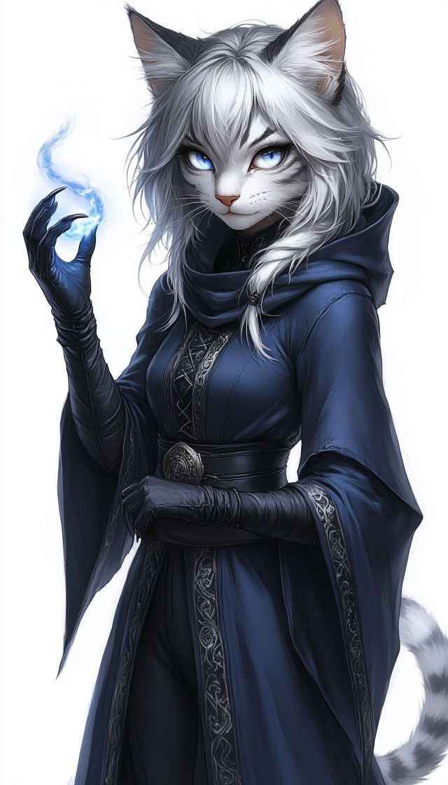

0003 – Anne Marinowar
Feline, Katze, Klosterbewohnerin und zentrale Figur der Ereignisse 5002 bis 5004. Wird von einer fremden Präsenz beeinflusst, deren Ursprung mit 3003 zusammenhängen könnte. Nach 5004 aus dem Kloster verbannt.
Wichtigste Beziehung
Sui Mitsuko: Wichtigste Vertrauensperson und Schutzbegleiterin.